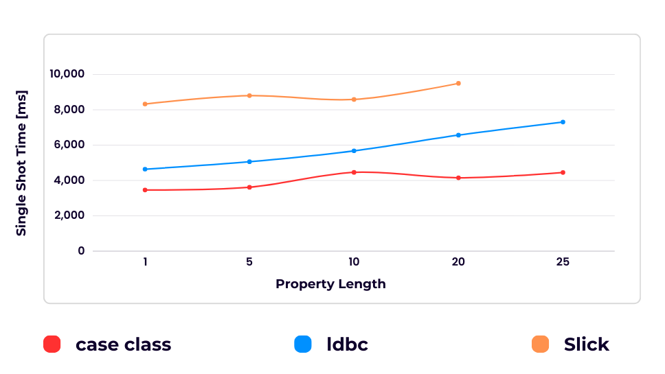
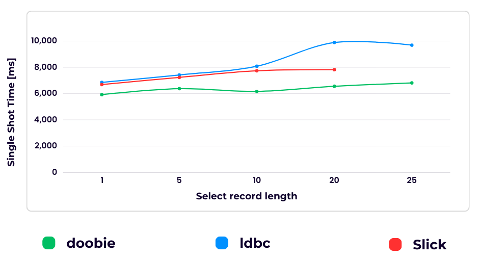
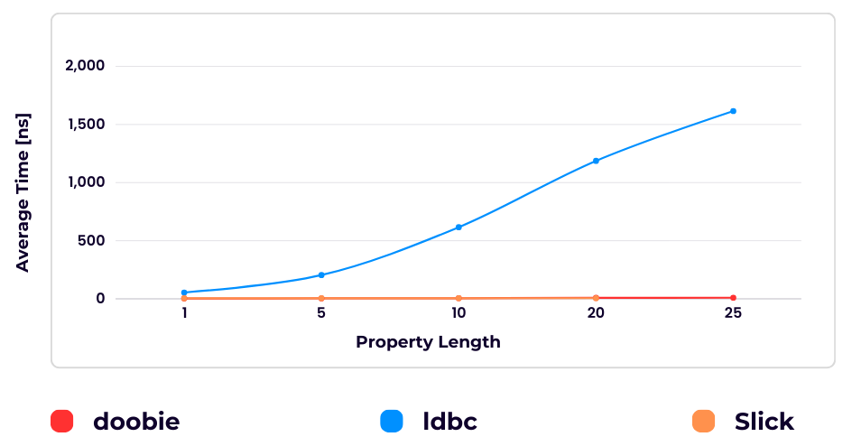
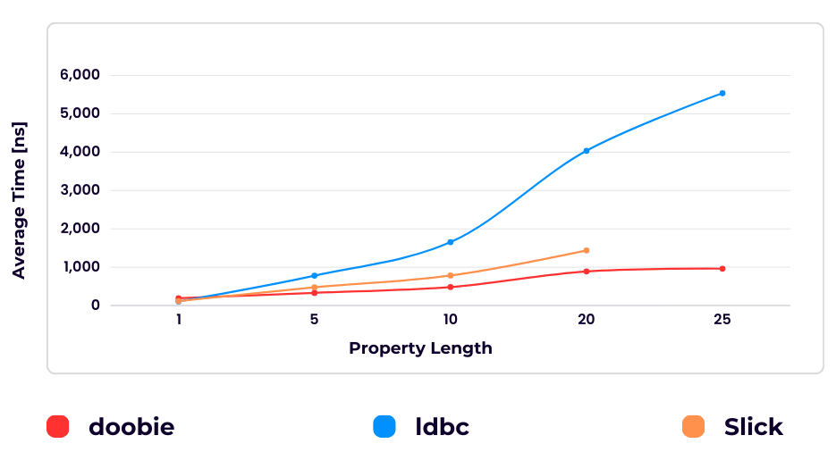
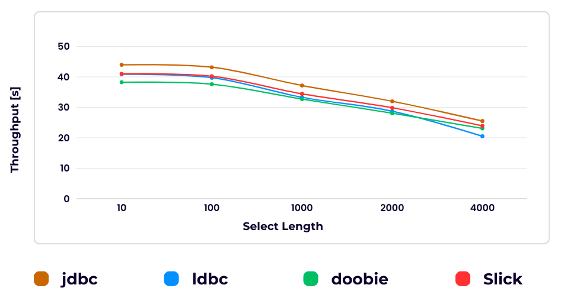

パフォーマンス
コンパイル時間のオーバーヘッド
テーブル定義のコンパイル時間はカラムの数に応じて増加する
Create compile time
クエリ構築のコンパイル時間はselectするカラム数に応じて増加する
Create query compile time
ランタイムのオーバーヘッド
ldbcは内部的にはTupleを使用しているので、純粋なクラス定義に比べてかなり遅くなってしまう。
Create runtime
ldbcはテーブル定義で他に比べてかなり遅くなってしまう。
Create query runtime
クエリ実行のオーバーヘッド
selectクエリの実行は取得するレコード数が増加するにつれてスループットは低くなる
Select Throughput
insertクエリの実行は挿入するレコード数が増加するにつれてスループットは低くなる
※ 実行したクエリが完全に一致するものではないため正確ではない
Insert Throughput

The source code for this page can be found here.